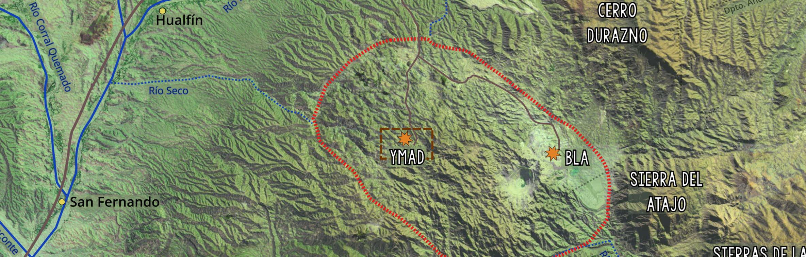

Geologic, Geochemical and Structural Characterization of the Los Viscos Vein in the Farallón Negro Volcanic Complex, Catamarca, Argentina ¶
2019-2020 - Universidad de Buenos Aires, Argentina ¶
Este proyecto de investigación se realizó como parte de los requisitos para la obtención del título universitario de Licenciada en Ciencias Geológicas de la Universidad de Buenos Aires. En él se presenta una caracterización geologíca, geoquímica y estructural de una de las vetas mineralizadas del Complejo Volcánico Farallón Negro ubicado en la Provincia de Catamarca, Argentina. El CVFN corresponde a una antigua caldera Miocena, consta de numerosos centros eruptivos muchos de ellos mineralizados, entre los que se encuentran el pórfiro cuprífero de Bajo de la Alumbrera y las venas epitermales (Au-Ag) de sulfuración intermedia Agua de Dionisio. La tesina se concentró en el estudio de un área de 6000 km2 en la porción NO de la veta Los Viscos. Durante el estudio de campo se realizó un muestreo sistematico de las vetas y la roca de caja, así como también la medición de diferentes estructuras (diaclasas, y diques). Las muestras fueron analizadas al microscopio, petrográfico y calcográfico (29 en total), y a través del método de roca total en forma geoquímica (11 muestras). Una vez obtenidos los resultados se confeccionó el mapa geológico, litologíco y de alteraciones hidrotermales de la zona. Las especies primarias de las vetas son sílice, carbonatos, óxidos e hidróxidos de manganeso, acompañados por elementos nativos como oro y plata, aleaciones, sulfosales de plata, óxidos de hierro y sulfuros. Entre las especies secundarias distinguidas preponderan los óxidos e hidróxidos de manganeso y de hierro. La secuencia definida para la zona de estudio evidencia que la depositación de los principales minerales de mena, sulfosales de plata, oro y plata nativos, fue en asociación con geles de sílice y carbonato. A través de un estudio de rosetas en las vetas y vetillas se determinaron los esfuerzos principales a la hora de depositación con una dirección principal NO-SE y una inclinación promedio de 60°. El estudio de las diaclasas y el dique arrojó una variación en los esfuerzos posterior al magmatismo. Con respecto a la interacción del fluido hidrotermal con la roca de caja ígnea, a partir del análisis petrográfico y geoquímico de muestras provenientes de estas rocas se identificaron una alteración propilítica- fílica de carácter regional y alteraciones argílicas próximas a las vetas y vetillas. Dichas alteraciones evidencian fluidos con un rango de temperatura entre los 100 y 300°C, con pH neutros a levemente ácidos. Por último, con los datos de roca total se determinaron los factores de enriquecimiento de la veta a través de dos métodos: MacLean (1990, 1993) y Gressen y Grant (1967, 1986) arrojando una concentración de metales preciosos de un 100%. El origen de los minerales de manganeso fueron estudiados a a través del método de Nicholson (1992) para determinar la presencia de dubbhitas. La veta de los Viscos fue comparada con Farallón Negro Rama Norte- Encuentro para determinar si el mismo fluido hidrotermal fue el que dio origen a ambos depósitos.

As part of my undergraduate research I worked along Carolina Mendez and Diana Irene Mutti in the a complete characterization of a SW portion of Los Viscos Vein in the Farallon Negro Volcanic Complex.

The Farallon Negro Volcanic Complex corresponds to an ld

presents a textural analysis of the hydrothermal silica present in a mineralized portion of the Los Viscos Vein, in the Farallón Negro Volcanic Complex, Catamarca, Argentina. This allowed to make new contributions about the genesis of the of the intermediate sulphidation, Au-rich epithermal system. The vein is composed primarily of quartz, carbonates and Mn-oxides, with secondary silver sulfosalt minerals such as acanthite- argentite, proustite, low sulfides, pyrite, and native elements, gold and silver. The complex spatial relationships between the different silica textures reflect that the current exposition level is within the paleo-zone of boiling upflow.

Selected Publications:
- Ninni, M.M., and Mendez C.C. (2020). Hydrothermal Quartz Textural Analysis of Los Viscos Vein in the Farallón Negro Volcanic Complex, Catamarca, Argentina. XII Congreso Argentino de Geologia Económica.
pdfRG - Ninni M.M. (2020). Geologic, Geochemical and Structural Characterization of the Los Viscos Vein in the Farallón Negro Volcanic Complex, Catamarca, Argentina. - Undergraduate Senior Thesis - Thesis directors: Dra. Diana Irene Mutti and Dra. Carolina Carmen Mendez. Ore Deposits and Economical Geology Department, UBA. (DOI: 10.13140/RG.2.2.20814.89923)
pdfRG